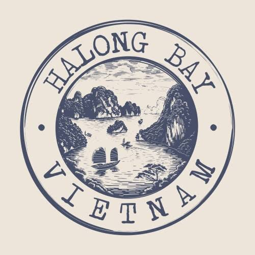

Giuseppe Amato
Lake Braies 2026 - Tourism on the Rise
Lago di Braies is a stunning alpine lake in Italy's Dolomites, famous for its crystal-clear turquoise waters, scenic wooden boathouse, and dramatic mountain reflections.

Giuseppe Amato
Lake Braies 2026 - Tourism on the Rise
Lago di Braies is a stunning alpine lake in Italy's Dolomites, famous for its crystal-clear turquoise waters, scenic wooden boathouse, and dramatic mountain reflections.
 Roblox
Roblox
Roblox in 2026: From Kids' Game to Global Entertainment Powerhouse
Roblox is a creative platform where players build unique worlds and enjoy thousands of games.

Elon Musk
Tesla Roadster: Rocket-Powered Innovation and Record-Breaking Speed
The Tesla Roadster is a cutting-edge electric supercar engineered to deliver breathtaking performance, showcasing an aerodynamic design, immense acceleration, and a revolutionary driving range that redefines sustainable automotive innovation.

Epicode
EPICODE: Transforming Talents into Global Tech Careers
Epicode trains passionate students to become skilled professional tech experts..

Minecraft
More Than Just a Game: The Educational Value of Minecraft
In this endless blocky world, you dig deep for rare shiny diamonds, build towering castles from scratch, and survive every single night against creeping dangers.


halong bay in VietnamLost in the Mist: The Ethereal Beauty of Halong Bay’s Limestone Karsts
Halong Bay, a breathtaking UNESCO World Heritage site in Vietnam, completely mesmerizes visitors with its emerald waters, towering limestone karsts, and thousands of lush islets, offering an unforgettable and truly magical cruise experience through nature.